Ajolote

Hábitat: Lagos y Canales de agua dulce al sur de la CDMX (principalmente el lago de Xochimilco)
Alimentacion: Carnivoros, pequeños invertebrados y peces
El ajolote es una salamandra endémica de México, de aspecto larvario, con branquias externas plumosas que sobresalen de su cabeza
y una aleta dorsal que recorre su cuerpo. Pueden medir de 15 a 30 cm de largo, y su piel varía de color, siendo en la naturaleza comúnmente marrón
con motas, mientras que en cautiverio se crían de colores más claros como rosa o blanco.
Datos curiosos
- Regeneración: Pude regenerar extremidades y órganos vitales, además de que acepta transplantes de otros ajolotes
- Genoma: Su genoma es uno de los más grandes del reino animal
- Fue nombrado símbolo cultural de la CDMX

Mantarraya

Hábitat: Agua salada, en mares tropicales, subtropicales o templados de todo el mundo
Alimentacion:Plancton, peces pequeños y calamares
La mantarraya es un pez cartilaginoso grande y plano, emparentado con los tiburones, conocido por su gran cuerpo en forma de diamante, aletas pectorales
en forma de alas y dos lóbulos cefálicos frontales. Se distinguen por su boca ancha y su piel suave cubierta de moco, con una coloración que varía de
negro a gris en la parte superior y blanca en la inferior, a menudo con patrones de manchas únicos en el vientreo.
Datos curiosos
- Tienen el cerebro más grande en relación a su tamaño corporal
- Pueden saltar afuera del agua hasta dos metros
- Viven de 40 a 50 años y se reproducen lentamente
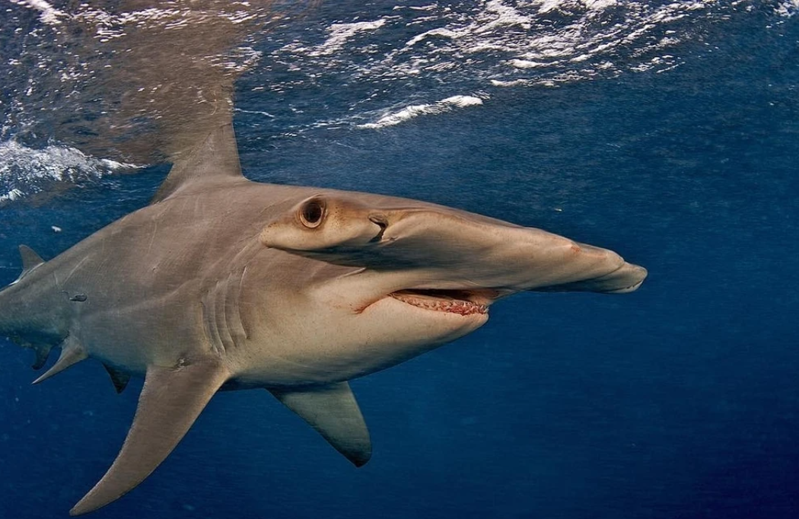
Tiburon Martillo
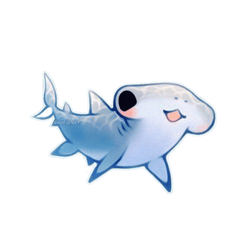
Hábitat: Aguas templadas y tropicales de todos los oceanos del mundo. Decienden hasta 300 metros
Alimentacion: Peces óseos, cefalópodos, crustaceos, rayas e incluso otros tiburones
Las principales características del tiburón martillo incluyen su cabeza distintiva en forma de martillo (\(cefalofoil\)), sus ojos y fosas nasales
ubicados en los extremos del cefalofoil, un cuerpo alargado y fusiforme, y su coloración grisácea o parduzca en el dorso y blanca en el vientre.
Utilizan su cabeza para diversas funciones como la detección eléctrica, la navegación y para cansar a sus presas.
Datos curiosos
- Vista panorámica:Sus ojos le permiten ver en casi todos los ángulos, con un punto ciego frontal
- Puede dar a luz hasta 40 crías
- Puede nadar inclinado hasta 90°
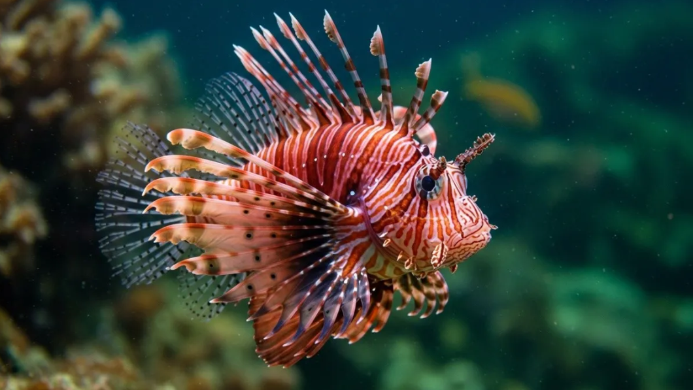
Pez León
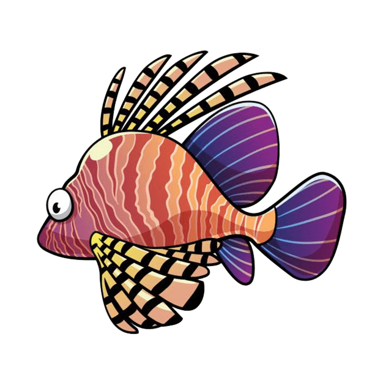
Hábitat:Es originario del Indo-Pácifico (De Japón a Australia), sin embargo es una especie invasora en el Atlántico y Caribe
Alimentacion: Peces pequeños, crustáceos (camarones, cangrejos) y moluscos
El pez león se caracteriza por su aspecto exótico y llamativo, con rayas rojas, marrones y blancas, aletas pectorales en forma de abanico y
apéndices carnosos sobre los ojos. Posee espinas dorsales, anales y pélvicas largas y venenosas que pueden causar un dolor intenso en caso
de picadura.
Datos curiosos
- Usa sus alentas pectorales para "caminar" lentamente sobre el fondo del mar
- Una hembra pone hasta 30,000 huevos cada 4 días en masas gelatinosas que flotan.
- A veces forman cardúmenes de hasta 50 individuos para cazar o reproducirse.

Pez Guppy
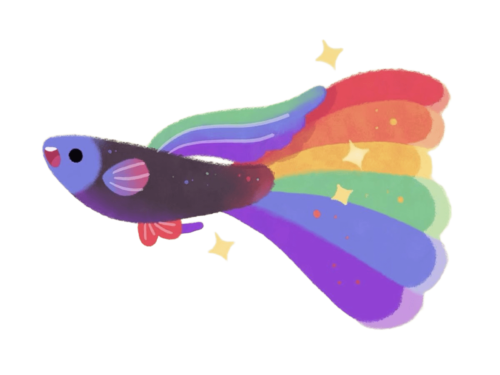
Hábitat: Arroyos de agua dulce, lagos y pantanos de agua tibia en el noreste de América del Sur y las Antillas
Alimentacion: Omnívoro: algas, larvas, insectos, crustáceos pequeños
Es un pequeño pez de agua dulce conocido por su colorido y su rápida reproducción. Presenta dimorfismo sexual marcado: los machos son más pequeños,
vistosos y de colores brillantes, mientras que las hembras son más grandes, de color grisáceo y menos ornamentadas. Los guppys son populares en
acuariofilia por su resistencia y facilidad de cuidado, y existen muchas variedades criadas selectivamente por sus patrones de color y forma
de aleta.
Datos curiosos
- Control de malaria: Introducido en aguas estancadas para comer larvas de mosquito.
- Indicadores de agua:Si los guppys sobreviven varios días, el agua se considera segura(potable).
- Cambio de color: Pueden cambiar de color según su estado de ánimo.
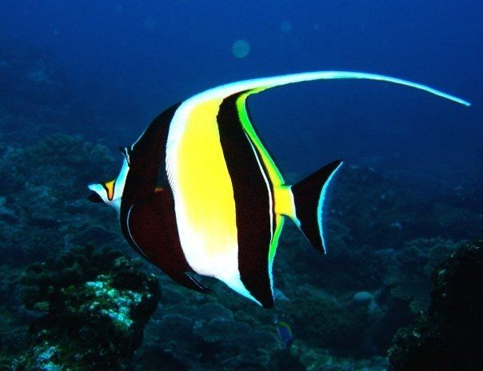
Pez Angel de Agua Marina

Hábitat:Se encuentran en los océanos Índico, Atlántico y Pacífico en arrecifes de coral maduros y en hábitats rocosos.
Alimentacion: Esponjas, algas, tunicados, invertebrados, plancton y detritos.
Los peces ángel marinos varían en tamaño, desde unos 15 cm hasta 46 cm de largo, y se caracterizan por su cuerpo aplanado,
a menudo de colores vibrantes y con formas que les permiten maniobrar fácilmente en los arrecifes de coral.Son peces muy activos y voraces.
Cuando son introducidos en un acuario, a menudo se muestran tímidos y se esconden, por lo que necesitan refugios para sentirse seguros.
Datos curiosos
- Algunos son tóxicos, absorben la toxicidad de su comida.
- Utilizan la exhibición de aletas y el movimiento para comunicarse sobre apareamiento, territorio o jerarquía social.
- En muchas especies, los peces ángel jóvenes tienen una coloración muy diferente a la de los adultos.
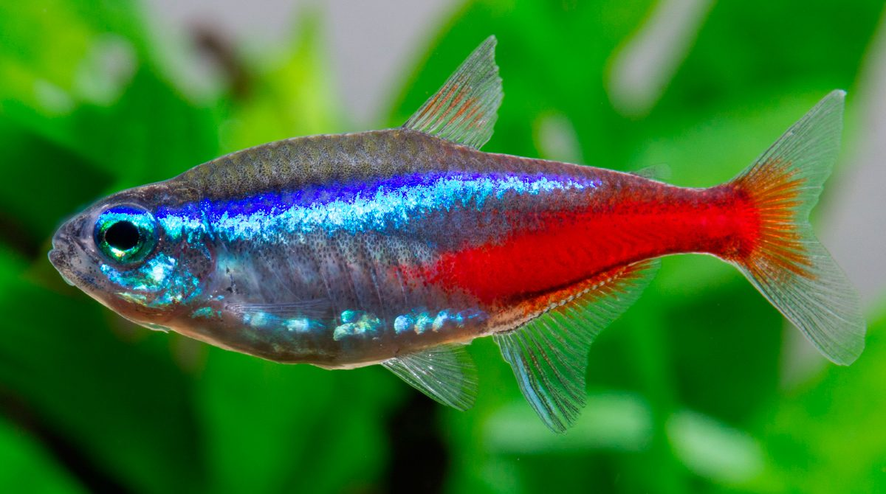
Pez Tetra Neon
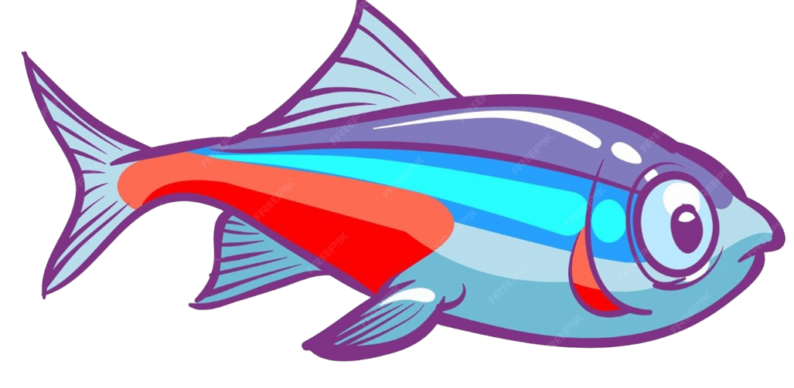
Hábitat: Amazonas, en arroyos y aguas claras o de aguas negras con mucho material vegetal en descomposición
Alimentacion: Pequeños invertebrados, algas, zooplancton
El pez tetra neón es un pez de agua dulce de Sudamérica conocido por sus llamativas franjas de color azul iridiscente y rojo brillante.
Es pequeño, con un tamaño de 3 a 4 cm, y su cuerpo es esbelto y parcialmente transparente, con el vientre de color blanco plateado.
Son peces pacíficos que nadan en grupos o cardúmenes y son muy apreciados en acuarios.
Datos curiosos
- Pueden atenuar sus colores en la oscuridad para protegerse de depredadores y los activan en ambientes bien iluminados.
- Las hembras suelen ser ligeramente más grandes, tienen un abdomen más redondeado y su raya azul es más curvada.
Los machos son más esbeltos y tienen una raya azul más recta.
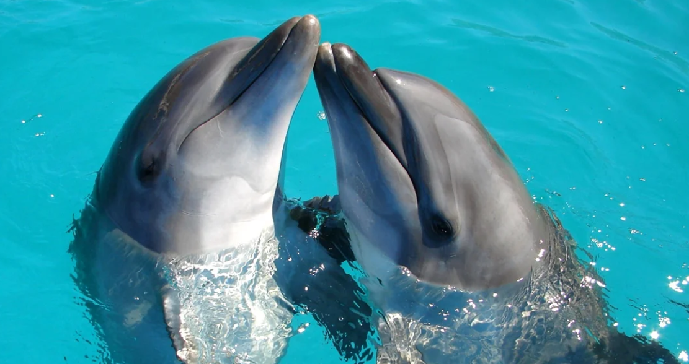
Delfin
Hábitat: Todos los océanos del mundo, en aguas templadas y tropicales, tanto en el mar abierto como en zonas costeras.
Alimentacion: Carnívoro: peces, calamares, crustáceos.
Los delfines son mamíferos marinos inteligentes, sociables y con un cuerpo hidrodinámico adaptado para nadar.
Tienen un hocico largo, cabeza grande con un espiráculo para respirar en la superficie, tres aletas (dos laterales y una dorsal) y
una cola aplanada para moverse. Su piel es lisa, carece de glándulas sudoríparas, y su color puede variar, siendo común el azul grisáceo
o gris claro.
Datos curiosos
- Duermen con un ojo abierto y una mitad de su cerebro activa, mientras la otra mitad descansa.
- Cada delfín tiene un silbido característico que funciona como su nombre.
- Son muy inteligentes y colaborativos, y pueden reconocerse en un espejo.
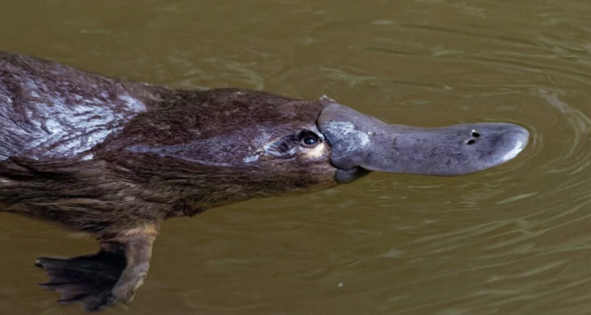
Ornitorrinco
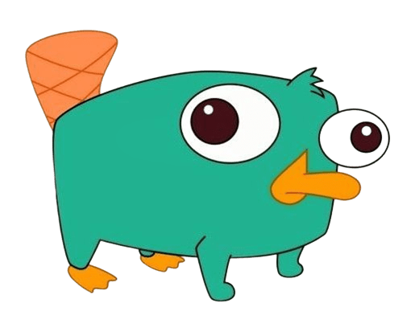
Hábitat: Sistemas de agua dulce en el este de Australia y Tasmania, como ríos, arroyos, lagos y charcas.
Alimentacion: Es carnívoro, se alimenta de crustáceos, larvas, gusanos, camarones
El ornitorrinco es un mamífero semiacuático endémico de Australia, famoso por su apariencia única que combina características de pato,
castor y nutria. Posee un pico sensible para detectar presas, patas palmeadas para nadar y una cola ancha y plana que almacena grasa.
Es uno de los pocos mamíferos que pone huevos (monotrema) y los machos tienen un espolón venenoso en sus patas traseras.
Datos curiosos
- No tienen estómago: Su garganta se conecta directamente con sus intestinos.
- Cazan con electricidad: Utilizan su hocico para detectar campos eléctricos generados por sus presas.
- Brillan bajo la luz ultravioleta: Su piel puede emitir un brillo verdoso-azulado bajo luz ultravioleta.